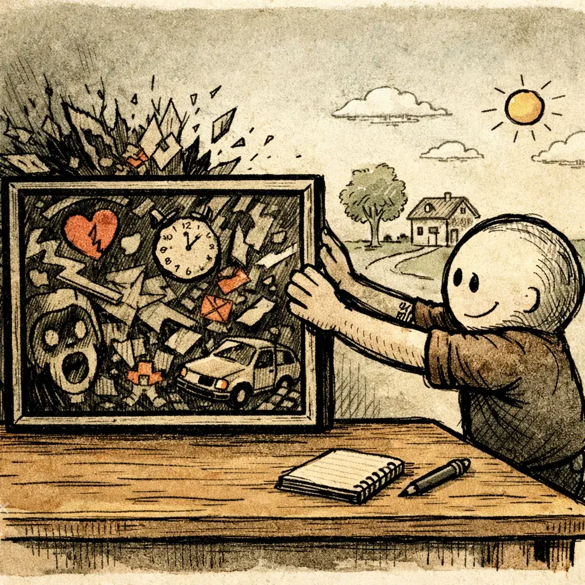

Sometimes the hardest part isn't doing the work. It's believing you've earned the right to try. The first time I understood that was in therapy — and I almost didn't get there.
When I first heard about Accelerated Resolution Therapy (ART), getting it approved required a referral and formal sign-off — which meant it wasn't exactly being pushed on me. I had to ask for it. Then, having asked for it, I spent the next stretch trying to talk myself out of it. I told my therapist I probably wouldn't respond to it. I told myself I didn't even think about my trauma anymore. Both were lies I believed completely.
Effective trauma therapy meets you where your system actually is — not where you think you should be, and not where someone else's timeline expects you to be. Safety comes first. Progress follows. What I didn't know yet was that my system was about to show me exactly where it actually was.
The truth was I was terrified. Not in a way I could have named clearly at the time — but somewhere underneath the resistance and the rationalizations, I knew I was standing at a threshold I couldn't uncross. Would I surface something I'd buried for a reason? Would this be another attempt that confirmed what part of me already believed — that I was too far gone for any of it to work? I went in anyway. Looking back, it was one of the most consequential decisions I made in the entire arc of my recovery.
In the first session, the moment I began describing the thing I claimed I never thought about, I broke. Nearly forty years old, in tears, feeling like I had been dropped back into the body of the child it had happened to. And then it ended. And what followed was something I had no framework for: a quiet, unexpected, almost disorienting peace. Not the absence of pain — something more than that. For me, peace was foreign.

The relief was so immediate I assumed it wouldn't hold. That it had to be a placebo effect, or adrenaline comedown, or wishful thinking dressed up as progress. It held. When I return to that memory now, what comes back is the version that was rebuilt in that session — quieter, softer, drained of the charge it used to carry. The emotional sting is gone. Not suppressed. Gone. That single session gave me enough evidence to go back — and to start dismantling the beliefs that had been constructed around decades of untouched damage.
I'm not going to tell you this will work for you or that you should expect what happened to me. I don't deal in sweeping guarantees — there are too many of those in recovery already. But I will say this:
If you step back and look at this: A man pushing forty. Two decades of severe addiction. Childhood trauma he had spent thirty years successfully convincing himself he had moved past. A track record of treatments that hadn't touched it. One session of trauma-focused therapy — and the thing he had been carrying since childhood lost its grip. Not gradually. Immediately. Not temporarily. Permanently.
I am not telling you what to conclude from that. I'm just telling you what happened.
If your story overlaps with mine at all — the avoidance, the certainty that you've already dealt with it, the quiet suspicion that something underneath has never actually been touched — it might be worth giving trauma-focused therapy a real consideration. ART was my doorway. It isn't the only one. The method matters less than the decision to stop working around the wound and start working on it.
Therapy isn't something that happens to you. It's something you actively shape — and the more intentionally you engage with it, the more it can be directed toward what your nervous system actually needs rather than what's most convenient for the system providing it. Access barriers are real: waitlists, limited options, financial constraints. None of that makes you powerless inside the room.
The goal isn't to force transformation. It's to create the conditions where your body feels safe enough to shift, soften, and update patterns that were written under very different circumstances. Here's how to do that — even inside an imperfect system.
Trauma processing can't happen in a body that doesn't feel safe. Before any deep work is possible, the nervous system needs to relearn how to exit emergency mode — grounding, breathing, establishing predictability, building enough of a container that the work has somewhere stable to land. Think of it as stopping the bleeding before attempting surgery.
Many treatment programs don't offer trauma-specific therapy — but they can provide structure, routine, and connection that allow the system to finally exhale. Once the body stops bracing, you can actually approach what needs to be approached.
The fastest way to stall in therapy is to arrive without focus. Unstructured talk becomes looping — the same story told with the same pain, excavated without ever being integrated. You leave feeling drained rather than different.
Your intention doesn't need to be profound. It needs to be specific enough to guide the hour. Before each session, I ask myself:
Even when you can't choose the therapist, you can choose the focus, pacing, and method.
I once had a psychiatrist tell me — after I described the dread I felt just leaving the house — that I "just need to get out more." It was roughly as useful as telling someone with a broken leg to walk it off. I didn't need instruction. I needed someone who understood why my body locked up in the first place. That's the difference between a clinician who talks at you and one who works with your nervous system. They're not the same job.
If the words don't come easily in the moment, borrow these:
Processing doesn't make the past disappear. It changes your relationship to it. The memory remains — but the charge drains out of it. You can remember without reliving. You can acknowledge without being pulled back under.
That's not erasure. That's liberation. The event becomes part of your story — no longer the force that's been writing it.
“Agency” is the technical term for the feeling of being in charge of your life: knowing where you stand, knowing that you have a say in what happens to you, knowing that you have some ability to shape your circumstances.
— Bessel A. van der Kolk, The Body Keeps the Score: Brain, Mind, and Body in the Healing of Trauma
Staying silent when therapy isn't working is a lot like staying silent when sobriety starts to slip — nothing changes, and the cost compounds quietly. The wrong fit doesn't just waste time. It can leave you more discouraged than when you started — convinced that healing simply isn't available to someone like you. That conclusion feels like truth. It isn't. It's your nervous system accurately reporting that this particular approach isn't right — not that no approach ever will be.
Switching therapists isn't failure. It's precision. You're not starting over — you're redirecting toward something that can actually meet you where you are. Those are not the same thing.
Think back to the most useful moment you've had in any therapeutic setting — formal or informal, clinical or not. What made it feel different from the rest? What's one sentence you can bring into your next session to deliberately steer the work toward that experience again?
When therapy is working, it rarely announces itself. The biggest shifts are often quiet: a memory that stings less than it did last month, a reaction that softens before it takes over, a choice that wasn't available to you before that suddenly appears. Healing doesn't arrive as a lightning strike. It arrives as a pattern interrupt — a new experience of safety the body slowly accumulates enough evidence to trust.
Progress isn't linear. Some weeks soften you. Others stretch you. A difficult session doesn't mean the therapy is wrong — it usually means something real surfaced. What matters is whether you feel supported enough to make sense of it afterward, rather than left holding it alone until next time.
You're not erasing your past. You're loosening its grip on your present. Reclaiming the space trauma occupied and filling it with something that actually belongs to you. For me, that process of integration — of slowly reconciling myself to myself — was the most significant thing I did. I had spent years at war with the person I had to live inside every day. Trauma work didn't turn me into someone else. It allowed me to see that version of myself with context instead of contempt — and to begin relating to him with something that eventually started to resemble understanding.
And if you don't have someone guiding you through that yet — if you're still trying to figure out what fits, what doesn't, and where the hell to even begin — that's exactly what this site exists for: to give you the clarity and context you deserved from the very beginning, and never got.
Follow the next step in order, or branch out into related topics.